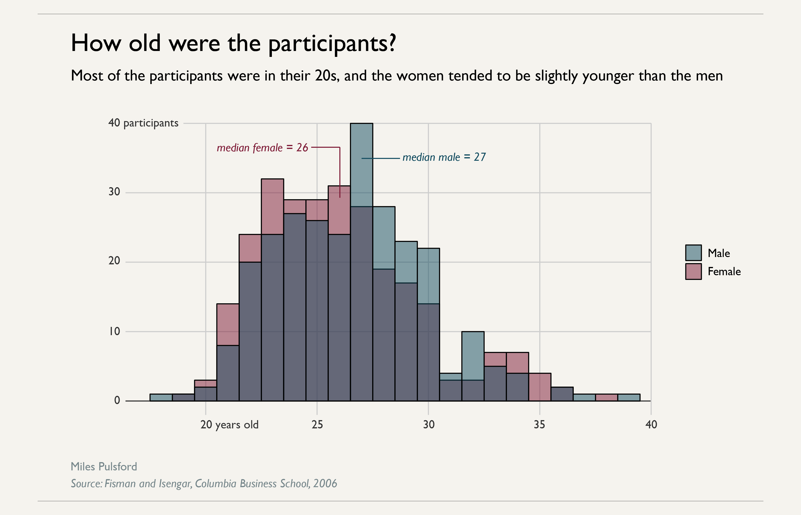
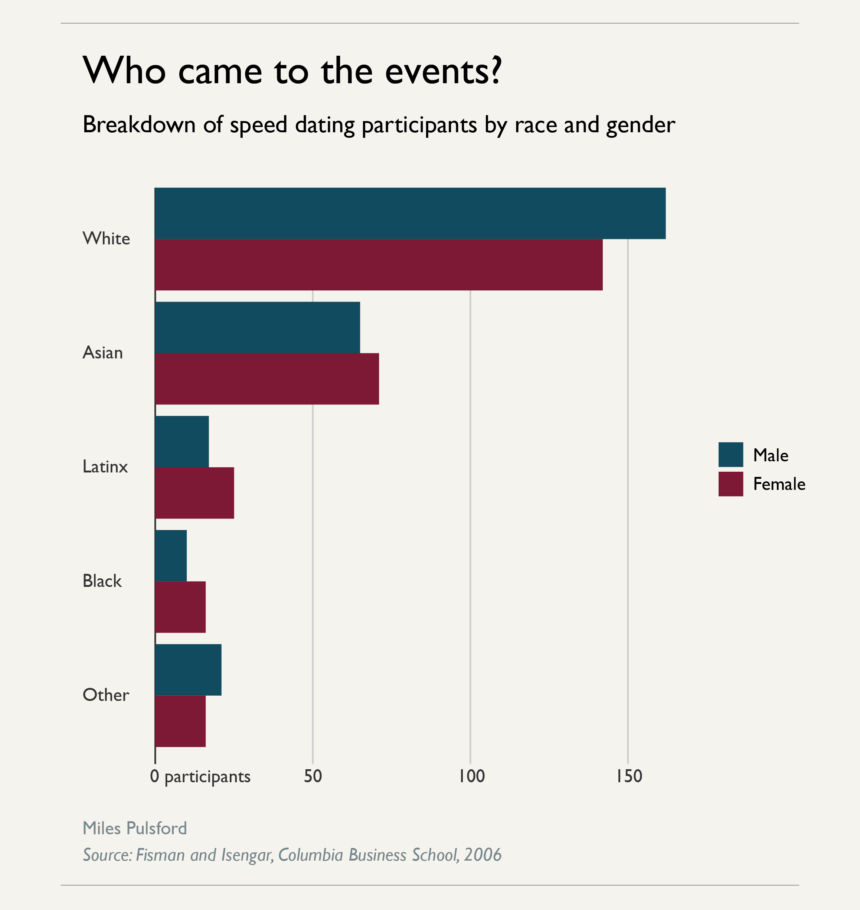
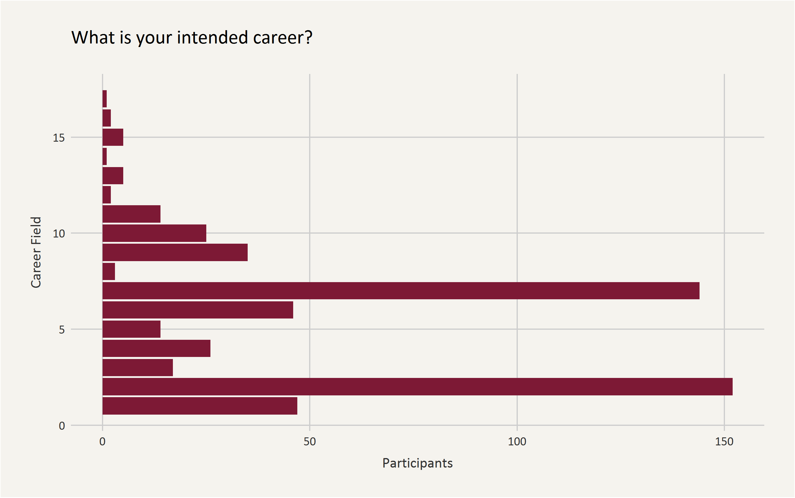
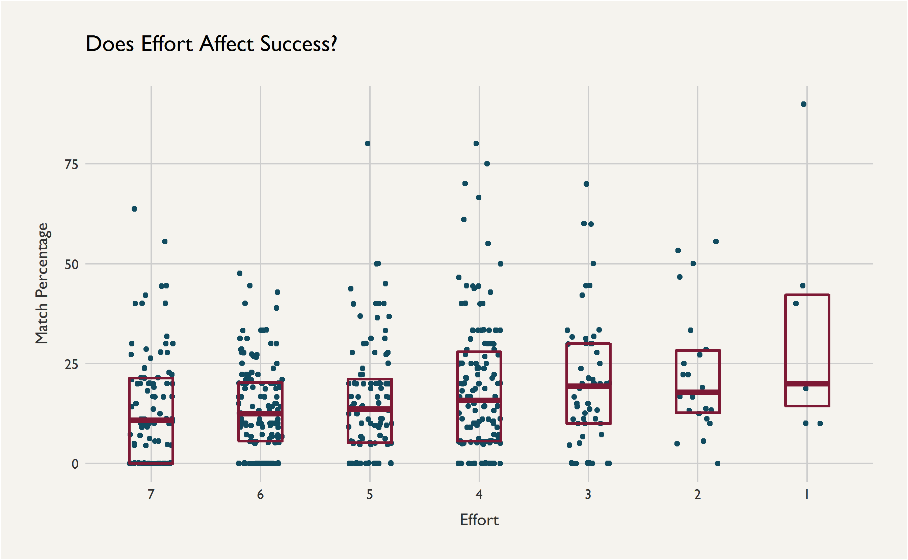
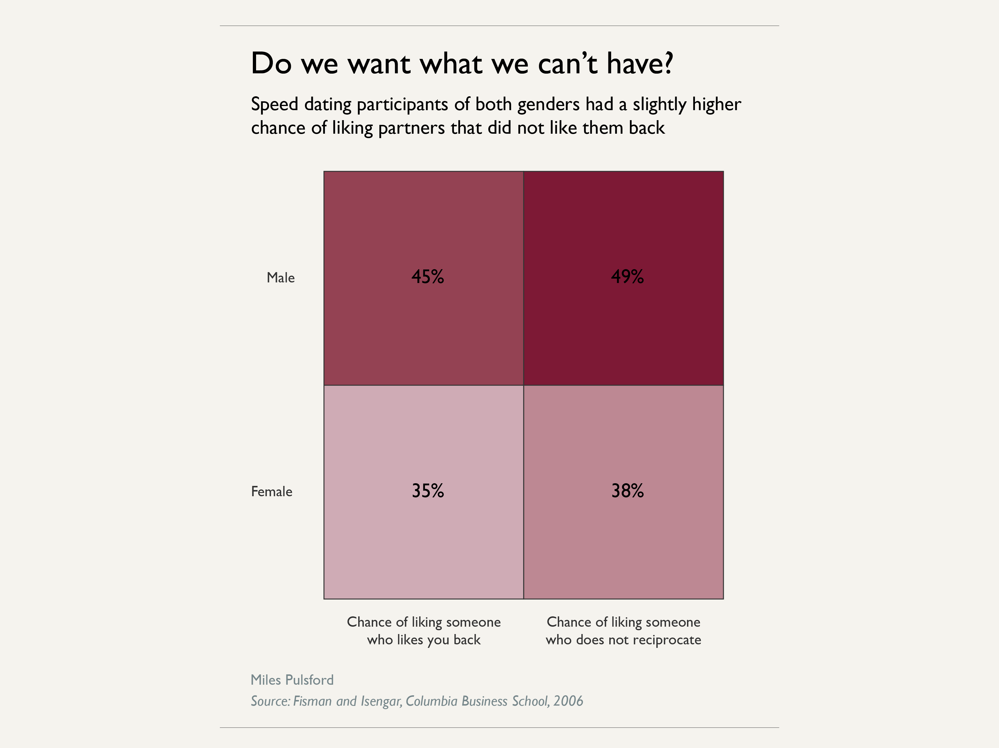
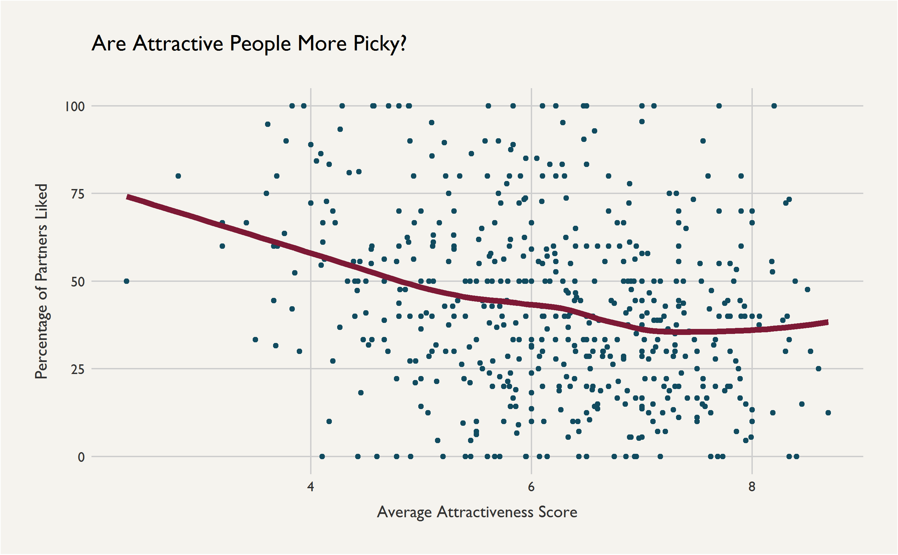

A data-driven look into dating and attraction
by Miles Pulsford
Age of participants (this one still needs a little work):
Race of participants:
Career breakdown (likewise, still finishing this one up):
Turns out putting more effort into dating is correlated with success! Though it's hard to determine the direction of causality...
We are actually slightly LESS likely to be attracted to someone who is attracted to us!
Attractive people are pickier, but not dramatically so:
